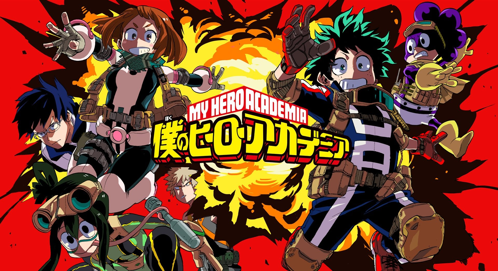

league of legends
deze game is constant aan het verandere voor conpetetive play en casual play.de game heeft ook een hope characters om te kiezen en te spelen ook heeft elke champion een zijn eigen moves en heeft zijn eigen soort build met items maar het staat niet vast dus het is ook je eigen beslissing wat je in de game voor items koopt.
nieuw

Danganronpa V3 Killing Harmony
de danganropa serie krijgt een nieuwe game na alleen een aminmatie te hebben gahad in 2016(Danganronpa V3 dispire).
nieuw

overlord
dit is een anime waar op het moment maar eerst seisoen van is maar er is bkend geworden dat er een seconde season komt volgende jaar waar het verhaal verder gaat hoop idereen want er is nog niks bekend over de content van deze anime.nieuw

my hero academia
deze anime krijg een derde seisoen na en fantasties eerste seisoen en een beter tweede seisoen en daarom hebben de makkers gezegt dat ze nu al bezig zijn met het nieuwe seisoen.nieuw